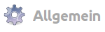
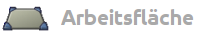
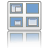
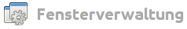
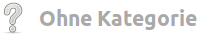
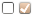
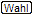
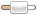
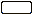

Unity Compiz Einstellungen
Dieser Artikel wurde für die folgenden Ubuntu-Versionen getestet:
Dieser Artikel ist mit keiner aktuell unterstützten Ubuntu-Version getestet! Bitte diesen Artikel testen und das getestet-Tag entsprechend anpassen.
Zum Verständnis dieses Artikels sind folgende Seiten hilfreich:
Achtung!
Das Unity-3D-Desktop verlangt auf dem Rechner ein funktionierendes Compiz (ausreichende 3D Beschleunigung).
 Der CompizConfig Einstellungs-Manager (abgeleitet aus der Paketbezeichnung nachfolgend mit "CCSM" abgekürzt) bietet umfangreiche Möglichkeiten, das Verhalten auf dem Bildschirm, das Aussehen diverser Komponenten sowie die Eingriffe durch die Tastatur und die Maus einzustellen.
Der CompizConfig Einstellungs-Manager (abgeleitet aus der Paketbezeichnung nachfolgend mit "CCSM" abgekürzt) bietet umfangreiche Möglichkeiten, das Verhalten auf dem Bildschirm, das Aussehen diverser Komponenten sowie die Eingriffe durch die Tastatur und die Maus einzustellen.
Dieser Artikel als Teil der Beschreibung Unity behandelt die Anteile aus dem "CCSM", die direkt das Aussehen und Verhalten von Unity beeinflussen. Die Übersicht über alle Plugins ist den Artikeln zum CCSM (CompizConfig Einstellungs-Manager) zu entnehmen.
Allgemeine Hinweise¶
Bedienung und Auswahl¶
Die folgende Übersicht stellt eine Auswahl aus dem CCSM dar. Erfasst wurden Optionen, die Einfluss auf die Einstellungen von Unity haben. Durch Anklicken des jeweiligen Icons bzw. des Titels gelangt man zur jeweiligen Detailbeschreibung.
|  | ||
| Allgemeine Optionen | Einstellungen zur Anordnung der Arbeitsflächen | |
| Einstellung der Tastenkombination zum "Desktop zeigen" | ||
| Gnome Kompabilität | Alternative Einstellungen zum "Ubuntu-Classic"-Desktop, wichtige Unterschiede | |
|  | ||
| Desktoptafel | Einstellung für direktes Umschalten der Arbeitsflächen (ohne Zoomen) | |
|  | Expo Tastenkombination | Einstellung für das Umschalten und Zoomen der Arbeitsflächen |
| Ubuntu Unity Plugin | Alle Einstellungen rund um das Startmenü (Launcher), das Verhalten und Aussehen | |
|  | ||
| Auswahl alle Fenster | Einstellung der Tastenkombination zum "Zeigen aller Fenster" auf der Arbeitsfläche (Skalieren). | |
|  | ||
| Touchscreen benutzen | Einstellung zur Benutzung eines Touchscreens (Berührungs-Monitor). | |
Erläuterung zu den Listen¶
Die Symbole in der Spalte "Typ" bei den Erläuterungen haben folgende Bedeutung:
 = Auswahl/Wechsel erfolgt durch Anklicken mit der

 = Einstellung der Tasten erfolgt in einer Auswahlbox
= Einstellung der Tasten erfolgt in einer Auswahlbox = Auswahl wird in einem "DropDown" vorgegeben
 = Einstellung erfolgt über einen "Schieber" oder durch direkte Werteeingabe
 = "text" steht hier stellvertretend für die Eingabe eines zulässigen Textes
Hervorgehobene Werte bei den Einstellungen verweisen auf die bei der Installation vorgegebene Standardeinstellung.
Voraussetzungen¶
In einer frischen Ubuntu-Installation muss der
compizconfig-settings-manager (universe)
 mit apturl
mit apturl
Paketliste zum Kopieren:
sudo apt-get install compizconfig-settings-manager
sudo aptitude install compizconfig-settings-manager
nachinstalliert [1] werden. Nach dem Anmelden werden je nach Ubuntu-Version und Hardware bestimmte Voreinstellungen für jeden Benutzer gesetzt.
Allgemein/Allgemeine Optionen¶
Allgemein Desktop-Größe¶
Hierunter fallen die Einstellungen zum Desktop und zu den Arbeitsflächen - Anzahl und Anordnung.
| Funktion | Typ | Beschreibung |
| Virtuelle horizontale Größe | Hiermit kann man die Anzahl der Arbeitsflächen einstellen, die nebeneinander angeordnet werden sollen. Der Standardwert ist 4, unter Unity jedoch 2 | |
| Virtuelle vertikale Größe | Hiermit kann man die Anzahl der Arbeitsflächen einstellen, die übereinander angeordnet werden sollen. Der Standardwert ist 1, unter Unity jedoch 2 | |
| Anzahl der Desktops | Der Standardwert ist 1 |
Allgemein Tastenkürzel¶
Neben einer Vielzahl von Tastatur-Mausknopf-Kombinationen ist hier zu finden:
| Funktion | Typ | Beschreibung |
| Desktop anzeigen | | Nimmt alle Fenster von der aktiven Arbeitsfläche (minimiert diese) bzw. lässt diese nach erneutem Drücken wieder erscheinen. Standardwert = Windows + D |
Allgemein/Gnome Kompabilität¶
Hinweis:
Diese Optionen unter dem "Reiter Allgemein" werden nur unter "Ubuntu-Classic" ausgewertet. Die vergleichbaren Einstellungen für das Unity-Desktop erfolgen unter Ubuntu Unity Plugin und werden unter "Unity" benutzt.
| Funktion | Typ | Beschreibung |
| Hauptmenü anzeigen | | Standardwert = Alt + F1 |
| Dialogfeld Ausführen | | Standardwert = Alt + F2 , ruft eine Kommandozeile / Dialogbox zur direkten Eingabe auf |
Arbeitsfläche/Desktoptafel¶
Die Umschaltung der Arbeitsflächen erfolgt in der Standardeinstellung mit der Tastenkombination Strg + Alt zusammen mit einer der Pfeiltasten → / ← / ↓ / ↑
Hinweis:
Es kann vorkommen, dass keine Reaktion erfolgt. Das ist darin begründet, dass mit der benutzten Pfeiltaste diese Richtung zum Umschalten nicht mehr zur Verfügung steht, weil die aktive Arbeitsfläche bereits in dieser Richtung angeordnet ist. Dazu muss erst die Option "Allow Wrap-Around" zugeschaltet sein.
Tastatur-Maus-Einstellungen¶
Unter dem Reiter "Bindings" werden die Einstellungen der Tastatur, der Maus und auch der Berührung der Bildschirmränder mit der Maus vorgenommen. Die Option "Umschaltung beim Verlassen" ("Edge Flipping") ist unter dem Unity-Desktop nicht einsetzbar (intern deaktiviert). Die Aktivierung dieser Einstellung für die "Ubuntu-Classic"-Variante muss dann noch unter dem Reiter "Edge Flipping" erfolgen.
Umschaltung beim Verlassen¶
| Funktion | Typ | Beschreibung |
| Edge Flip Pointer | Umschaltung mit Mauszeiger: Wenn diese Option aktiviert wurde, schaltet die Arbeitsfläche auf die daneben liegende Arbeitsfläche um, sobald der Mauszeiger den Rand der Arbeitsfläche berührt. Je nach Anordnung der Arbeitsflächen ist auch ein Umschalten nach unten / oben möglich. | |
| Edge Flip Move | Umschaltung mit Fenster: Wenn diese Option aktiviert wurde, schaltet die Arbeitsfläche auf die daneben liegende Arbeitsfläche um, sobald ein Fenster über den Rand der Arbeitsfläche verschoben wird. Relevant ist die Position des Mauszeigers, der das Fenster mit gedrückter -Taste zum Verschieben ergriffen hat. | |
| Edge Flip DND | Umschaltung mit Objekt: Wenn diese Option aktiviert wurde, schaltet die Arbeitsfläche auf die daneben liegende Arbeitsfläche um, sobald ein "Objekt" (z.B.: ein Ordner) über den Rand der Arbeitsfläche verschoben wird |
Vorschau bei Umschaltung¶
Die Tastenkombination Strg + Alt zusammen mit einer der Pfeiltasten → / ← / ↓ / ↑ schaltet die Arbeitsflächen um. Unter dem Reiter "Viewport Switching" findet sich u.a. folgende ergänzende Einstellung:
| Funktion | Typ | Beschreibung |
| Allow Wrap-Around | Mit der Aktivierung dieser Funktion kann man die Umschaltung der Arbeitsflächen auch über das eine Ende der Desktoptafel hinaus zum anderen Ende hin direkt umschalten. |
Arbeitsfläche/Expo¶
Expo Tastenkombination¶
| Funktion | Typ | Beschreibung |
| Expo key | | Expo Tasten: Einstellung der Tastenkombination zum Einleiten der Umschaltung der Arbeitsflächen. Die Einstellung erfolgt in einer Auswahlbox. |
| Standardeinstellung = Windows + S | ||
| Expo Button | | Expo Mausknopf: Hier kann man die Maustaste (oder eine Kombination mit der Tastatur) einstellen, die zum Einleiten der Umschaltung der Arbeitsflächen aufruft. Die Einstellung erfolgt in einer Auswahlbox. Standardeinstellung = "Deaktiviert" |
| Expo edge | | Expo Bildschirmrand: Hiermit kann man den Bildschirmrand vorgeben, der bei Berührung mit dem Mauszeiger, die Umschaltung der Arbeitsflächen aufruft. Erneutes Berühren schließt die Desktoptafel. Die Einstellung erfolgt in einer Auswahlbox. Standardeinstellung = "Nichts" |
| Double click time | Doppelklick auf Auswahl: Hiermit kann die Zeit für einen Doppelklick auf die auszuwählende Arbeitsfläche eingestellt werden, um mit dieser in den Vollbildmodus zurück zu kehren. Standardwert = 500 msek | |
| Drag&drop | | Mit Mausknopf ziehen: Hiermit wird eingestellt, mit welchem Mausknopf ein Fenster zwischen den gezoomten Arbeitsflächen verschoben werden kann. Die Einstellung erfolgt in einer Auswahlbox. Standardeinstellung = |
| Exit expo | | Expofunktion verlassen: Die Einstellung erfolgt in einer Auswahlbox. Standardeinstellung =  (mit Button 3 bezeichnet) (mit Button 3 bezeichnet) |
| Next viewport | | Nächste Ansicht aufrufen: Klickt man mit der eingestellten Maustaste auf eine beliebige, gezoomte Arbeitsfläche, so wird der Fokus auf die nächste Arbeitsfläche im Uhrzeigersinn weiter geschaltet. Die Einstellung erfolgt in einer Auswahlbox. Standardeinstellung = Maustaste 4 |
| Previous viewport | | Vorherige Ansicht aufrufen: Klickt man mit der eingestellten Maustaste auf eine beliebige, gezoomte Arbeitsfläche, so wird der Fokus auf die nächste Arbeitsfläche gegen den Uhrzeigersinn weiter geschaltet. Die Einstellung erfolgt in einer Auswahlbox. Standardeinstellung = Maustaste 5 |
Arbeitsfläche/Ubuntu Unity Plugin¶
Die Einstellungen für die Tastenkombination Alt + F1 / Alt + F2 sind an dieser Stelle nur für die "Ubuntu"-Desktop-Variante wirksam, die Einstellungen für die "Ubuntu-Classic"-Desktop-Variante erfolgen unter Allgemein, Gnome-Kompabilität.
Unity Verhalten¶
| Funktion | Typ | Beschreibung |
| Reveal Mode | | Modus zum Hervorholen: Hiermit wird festgelegt, zu welchem Bildschirmrand der Mauszeiger geführt werden muss, damit das "ausgewichene" Startmenü wieder sichtbar gemacht werden kann. Die Einstellung erfolgt in einer Auswahlbox. Standardeinstellung = links (andere Einstellungen sind zwar möglich, aber nicht sinnvoll!) |
| Hide Launcher | Einstellung Autohide: Hier kann man die Aktion einstellen, worauf das Startmenü reagieren soll, damit es aus dem sichtbaren Bildschirm heraus genommen wird. Folgende Vorgaben sind auswählbar: "Niemals", "Autohide", Fenster ausweichen, "aktivem Fenster ausweichen" | |
| Key to show the launcher | | Taste zum Sichtbarmachen: Hiermit wird festgelegt, mit welcher Tasten-(Kombination) das "ausgewichene" Startmenü wieder sichtbar gemacht werden kann. Die Einstellung erfolgt in einer Auswahlbox. Standardeinstellung = Windows gedrückt halten |
| Key to put keyboard-focus on launcher | | Startmenü aufrufen: Hiermit wird festgelegt, mit welcher Tasten-(Kombination) die oberste Anwendung im Startmenü erreicht werden kann. Die Einstellung erfolgt in einer Auswahlbox. Standardeinstellung = Alt + F1 |
| Key to execute command | | Eingabemaske aufrufen: Hiermit wird festgelegt, mit welcher Tasten-(Kombination) das Eingabefeld (Kommandozeile) geöffnet werden kann. Die Einstellung erfolgt in einer Auswahlbox. Standardeinstellung = Alt + F2 |
| Key to open first panel menu | | Panelmenü aufrufen: Hiermit wird festgelegt, mit welcher Tasten-(Kombination) der erste Menüpunkt im Panel aufgerufen werden kann. Die Einstellung erfolgt in einer Auswahlbox. Standardeinstellung = F10 |
Unity Schalter¶
 Der Umschalter wird dazu benutzt, zwischen den verschiedenen, geöffneten Anwendungen (Fenster) umzuschalten. Es erfolgt dabei eine Anzeige mit den Symbolen der Anwendungen (vergrößerte Icons). Es werden alle offenen Anwendungen erfasst, auch wenn diese minimiert oder auf einer anderen Arbeitsfläche sich befinden. Solange man die
Alt -Taste nicht los lässt, kann man zwischen den verschiedenen Modi wechseln. Nach dem Loslassen der
Alt -Taste wird die momentan ausgewählte Anwendung aktiviert / erhält den Fokus.
Der Umschalter wird dazu benutzt, zwischen den verschiedenen, geöffneten Anwendungen (Fenster) umzuschalten. Es erfolgt dabei eine Anzeige mit den Symbolen der Anwendungen (vergrößerte Icons). Es werden alle offenen Anwendungen erfasst, auch wenn diese minimiert oder auf einer anderen Arbeitsfläche sich befinden. Solange man die
Alt -Taste nicht los lässt, kann man zwischen den verschiedenen Modi wechseln. Nach dem Loslassen der
Alt -Taste wird die momentan ausgewählte Anwendung aktiviert / erhält den Fokus.
Befand sich die ausgewählte Position auf einer anderen Arbeitsfläche, so wird auch gleich die Arbeitsfläche mit gewechselt. War die ausgewählte Anwendung vorher minimiert, so wird auch gleichzeitig der Fokus auf diese Anwendung gelegt.
| Funktion | Typ | Beschreibung |
| Automatically grid Windows on timer in switcher | Automatische Anzeige der einzelnen Fenster nach einiger Zeit: Hat man mehrere Fenster der gleichen Anwendung geöffnet (z. B. mehrere Terminalfenster), so werden diese zu einem Symbol im Umschalter zusammengefasst. Aktiviert man diese Option, werden nach einigem Verweilen der Umschalterauswahl auf diesem Symbol (d. h. bei gedrückt gehaltener Alt -Taste) die einzelnen Fenster der Anwendung gezeigt, so als ob man die Funktion Anzeigen des Fensters im Umschalter (siehe unten) aufgerufen hätte. | |
| Bias alt-tab sorting to prefer windows on the current viewport | Zusätzlich nach Arbeitsflächen sortieren: Hiermit kann man einstellen, dass die Anzeige während der Betätigung von Alt + Tab ⇆ neben einer alphabetischen Anordnung auch noch nach den Arbeitsflächen sortiert wird. | |
| Key to start the switcher | | Taste(n) zum Starten des Schalters: Hiermit wird festgelegt, mit welcher Tasten-(Kombination) der Umschalter gestartet werden soll. Standardeinstellung = Alt + Tab ⇆ . |
| Erneutes Drücken der Tab ⇆ Taste schaltet eine Position weiter. | ||
| Key to start the switcher in reverse | | Taste(n) zum Starten des Schalters rückwärts: Hiermit wird festgelegt, mit welcher Tasten-(Kombination) das Durchblättern in umgekehrter Richtung erfolgen soll. Standardeinstellung = Alt + Tab ⇆ + ⇧ . |
| Nach dem Aufruf des Umschalters mit Alt + Tab ⇆ kann man durch zusätzliches Drücken der ⇧ -Taste die Richtung der Auswahl umkehren. | ||
| Erneutes Drücken der Tab ⇆ Taste schaltet eine Position zurück. | ||
| Go right in the switcher | | In der Auswahl nach rechts gehen: Hiermit wird festgelegt, mit welcher Tasten-(Kombination) die Auswahl nach rechts aktiviert wird. Standardeinstellung = Alt + → . |
| Es muss nach dem Aufrufen des Umschalters die Tab ⇆ -Taste losgelassen und dann die Pfeiltaste → betätigt werden. | ||
| Go left in the switcher | | In der Auswahl nach links gehen: Hiermit wird festgelegt, mit welcher Tasten-(Kombination) die Auswahl nach links aktiviert wird. Standardeinstellung = Alt + ← . |
| Es muss nach dem Aufrufen des Umschalters die Tab ⇆ -Taste losgelassen und dann die Pfeiltaste ← betätigt werden. | ||
| Key to expose the windows in the switcher | | Taste zum Anzeigen des Fensters im Umschalter: Hiermit wird festgelegt, mit welcher Tasten-(Kombination) das relevante Fenster unter der momentanen Auswahl angezeigt werden soll, es erfolgt ein Wechsel vom Icon zum echten Fenster. Standardeinstellung = Alt + ↓ . |
| Es muss nach dem Aufrufen des Umschalters die Tab ⇆ -Taste losgelassen und dann die Pfeiltaste ↓ betätigt werden. | ||
| Key to collapse the windows in thw switcher | | Taste zum Ausblenden des Fensters im Umschalter: Hiermit wird festgelegt, mit welcher Tasten-(Kombination) das angezeigte Fenster wieder ausgeblendet werden soll, es erfolgt ein Wechsel vom echten Fenster zurück zum Icon. Standardeinstellung = Alt + ↑ . |
| Eine Umschaltung vom Fenster zum Icon erfolgt mittels der Alt + ↑ -Taste nur, sofern die obige Option aufgerufen wurde. | ||
| Key to flip through windows in the switcher | | Taste zum Wechseln der Fensters im Umschalter: Hiermit wird festgelegt, mit welcher Tasten-(Kombination) zwischen den Fenstern gewechselt werden soll. Standardwert = "Deaktiviert". Diese Funktion ist zur Zeit nicht aktivierbar! |
| Key to flip through windows in the switcher backwards | | Taste zum Wechseln der Fensters im Umschalter rückwärts: Hiermit wird festgelegt, mit welcher Tasten-(Kombination) zwischen den Fenstern gewechselt werden soll. Standardwert = "Deaktiviert". Diese Funktion ist zur Zeit nicht aktivierbar! |
Unity Experimental¶
Die hervorgehobenen Angaben unter "Einstellungen" sind die Standardeinstellungen.
| Funktion | Typ | Beschreibung |
| Backlight Mode | Hintergrund Modus für Icon: Hiermit kann man drei Alternativen zum Hintergrund für die Anwendungs-Icons im Startmenü einstellen. Die Einstellungen erfolgen in einer Auswahlbox. Einstellungen: immer an, "Pulsieren", "immer aus" | |
| Launch Animation | Animation beim Starten: Hiermit kann man festlegen, wie der Hintergrund sich während des Startvorganges der Anwendung verhält. Die Einstellungen erfolgen in einer Auswahlbox. Einstellungen: "Nichts", Pulsieren, "Blinken" | |
| Urgent Animation | Benachrichtigungs Animation: Hiermit kann man festlegen, was passieren soll, wenn die Anwendung eine Benachrichtigung hat, um Aufmerksamkeit zu erhaschen. Die Einstellungen erfolgen in einer Auswahlbox. Einstellungen: "Nichts", "Pulsieren", Wackeln | |
| Panel Opacity | Transparenz des Panel: Hiermit kann man die Transparenz des Panels des Desktops einstellen. Standardwert = 1,0000 (entspricht keine Transparenz - 0,000 = entspricht volle Durchsichtigkeit) | |
| Launcher icon size | Größe der Startmenü-Icons: Hiermit kann man die Größe der Icons im Startmenü einstellen. Standartwert = 48 Pixel (Die Einstellung im Bereich von 32 bis 64 sollte in Schritten von 8 Pixeln erfolgen) | |
| Hide Animation | Animation beim Verstecken: Hiermit kann man die Art und Weise einstellen, wie das Startmenü bei "Autohide" sich darstellt. Einstellungen: "Ausblenden on bfb und Gleite", "Nur Gleiten", "Nur Ausblenden", Ausblenden und Gleiten | |
| Dash Blur | Eintrübung Übersichtstafeln: Hiermit kann man einstellen, ob das Dash einen eingetrübten Hintergrund haben soll oder nicht. Einstellungen: "Keine Eintrübung", Statische Eintrübung | |
| Automaximize value | Schwellwert der automatischen Maximierung: Hiermit kann man den Wert einstellen, ab dem ein Fenster automatisch im Vollbildmodus öffnet. Die Angabe ist ein Verhältniswert von der gesamten Anzeigefläche. Standardwert ist 75%. Will man immer die Fenster im Originalzustand öffnen, so sollte man diesen Wert auf 100% stellen. | |
| Show Devices | Anzeige der Laufwerke im Startmenü: Hiermit kann man die Art und Weise einstellen, wie und wann die Laufwerke im Startmenü gezeigt werden. Die Einstellungen sind: "Never", OnlyMounted, "Always". | |
| In der Einstellung "OnlyMounted" sind weitere Einstellungen möglich, die es u.a. erlauben, auch nicht eingebundene Laufwerke dauerhaft im Startmenü angezeigt zu bekommen. Dazu muss man bei einem angezeigten Laufwerk nur die Option "Im Starter behalten" setzen oder im Dconf Editior die relevanten Einstellungen vornehmen. | ||
Fensterverwaltung/Skalieren¶
Skalieren Tastenkombination¶
| Funktion | Typ | Beschreibung |
| Fensterauswahl alle Fenster | | Hiermit kann man sich alle Fenster von allen Arbeitsflächen in einer Übersicht anzeigen lassen. Erneutes Drücken mit dieser Tastenkombination stellt das Vollbild wieder her. Standardeinstellung = Windows + W |
Ohne Kategorie/Unity MT Grab Handles¶
Touchscreen benutzen¶
Mit dem Plugin "Unity MT Grab Handles" wird es ermöglicht, auf einem Touch-Screen Aktionen mit Fenstern auszuführen. Nach einer Aktivierung werden für das aktive Fenster Bewegungspunkte angezeigt, mit denen man diese Fenster
insgesamt bewegen kann (entspricht Alt +
)Fenster von den Rändern/Ecken her
verkleinern kann
vergrößern kann
Hinweis:
In der Maske für "Unity MT Grab Handles" sind die Bezeichnungen für die Tasteneinstellungen (zur Zeit leider) einheitlich mit "Toggle Handles" bezeichnet - deshalb wurde eine lfd. Nummer zur Zuordnung eingesetzt. Dieses Plugin wird als "experimentel" eingestuft !
| Funktion | Typ | Beschreibung |
| Tastenkombi eins (1) | | im Original mit Toggle Handles bezeichnet. Hiermit kann man in einer Auswahlbox eine Tastenkombination für die Anzeige der "Marker" setzen. Diese Option wird zum Arbeiten mit den "Fingerpunkten" eingesetzt. Standardeinstellung = "Deaktiviert" |
| Tastenkombi zwei (2) | | im Original mit Toggle Handles bezeichnet. Hiermit kann man in einer Auswahlbox eine Tastenkombination zur Aktivierung der "Marker" setzen. Standardeinstellung = "Deaktiviert" |
| Tastenkombi drei (3) | | im Original mit Toggle Handles bezeichnet. Hiermit kann man in einer Auswahlbox eine Tastenkombination zur Deaktivierung der "Marker" setzen. Standardeinstellung = "Deaktiviert" |
| Fade Duration | Dauer : Hiermit kann man die Ein- bzw. Ausblendzeit einstellen. Standardwert = 150 - negative Werte führen zu einer Unterdrückung der Anzeige. |
Links¶
Unity
 Übersichtsartikel
ÜbersichtsartikelUnity Startmenü - Bedienung
Unityund AnwendungenUnity Desktop - Desktop-Menü und Applets bedienen
Unity Arbeitsbereich - Anpassungen an Verhalten, Aussehen und Tuning
Unity Einstellungen - Konfiguration im Unity-Editor und im Terminal (Befehle und Funktionen)
Compiz Informationen zum Composite- und Fenstermanager
CCSM - der CompizConfig Einstellungs-Manager
Compiz Plugins - eine Übersicht zu den Einstellungen
- Erstellt mit Inyoka
-
 2004 – 2017 ubuntuusers.de • Einige Rechte vorbehalten
2004 – 2017 ubuntuusers.de • Einige Rechte vorbehalten
Lizenz • Kontakt • Datenschutz • Impressum • Serverstatus -
Serverhousing gespendet von